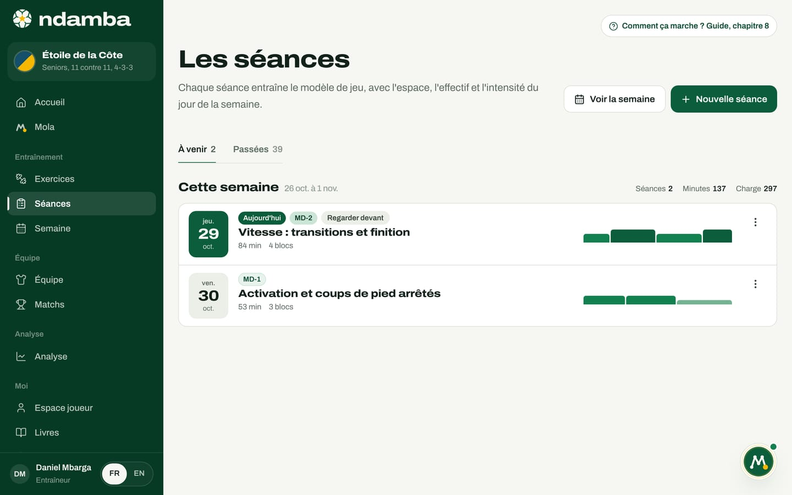
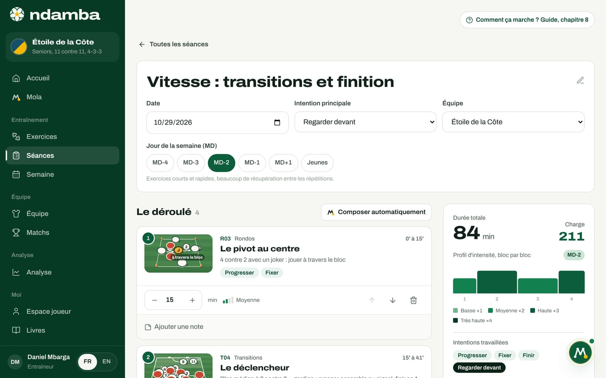

Construire une séance
La liste des séances et le constructeur de séance, avec le jour MD, l’intention, les blocs, les minutes, la charge, ce que Mola compose pour vous, et la feuille à imprimer ou à envoyer sur WhatsApp.
10 min de lecture
Beaucoup de séances sont une suite d’exercices que l’on aime bien, dont la durée dépend de l’heure à laquelle la lumière baisse. Le Code Njangi propose l’inverse : une séance est une histoire courte, avec un seul fil, une intention travaillée sous plusieurs formes, de plus en plus proches du match. Le constructeur de Ndamba sert à écrire cette histoire en quelques minutes, à vérifier qu’elle tient debout (durée, charge, intentions), puis à l’emporter : sur une feuille A4, dans WhatsApp ou dans le calendrier.
La liste des séances
- Dans le menu de gauche, groupe Entraînement, touchez Séances. Sur téléphone, c’est l’onglet Entraîner.
- La page Les séances s’ouvre sur l’onglet À venir. L’onglet Passées garde l’historique, de la plus récente à la plus ancienne. Le nombre de séances de chaque onglet est affiché à côté de son nom.
- Les séances sont regroupées par semaine : Cette semaine, La semaine prochaine, La semaine dernière, puis « Semaine du » et la date du lundi.


Chaque groupe affiche trois totaux à droite : Séances, Minutes et Charge (la charge est expliquée plus bas). Attention, ces totaux ne comptent que les séances de l’onglet ouvert : dans À venir, la semaine en cours ne compte que les séances d’aujourd’hui et des jours suivants. Pour voir toute la semaine, touchez Voir la semaine (chapitre 9).
Chaque ligne montre la date, le jour MD, l’intention principale, le titre, la durée, le nombre de blocs et le profil d’intensité, une colonne par bloc. Le badge Aujourd’hui signale la séance du jour. Une séance composée par Mola, que ce soit avec Mola compose pour moi, avec Planifier la semaine et Préparer la semaine (chapitre 9) ou dans la conversation, porte la petite marque Mola. Touchez la ligne pour ouvrir la séance.
Le bouton à trois points, au bout de chaque ligne, propose Dupliquer et Supprimer. Dupliquer crée une copie nommée « (copie) » ; si l’original est passé, la copie est placée aujourd’hui, prête à être déplacée. Supprimer demande confirmation : « Supprimer la séance ? ». Les exercices, eux, restent toujours dans la bibliothèque.
Si vous n’avez encore aucune équipe, la page affiche d’abord une petite carte, Créez d’abord votre équipe : un Nom de l’équipe, une Catégorie (de U9 à Seniors) et un Format (de 5 contre 5 à 11 contre 11), puis Créer l’équipe. Les séances et la semaine se rangent par équipe.
Créer une séance
- Touchez Nouvelle séance, en haut à droite.
- Titre : laissez-le vide si vous voulez. La séance prendra le nom de son jour, par exemple « Tension : petits espaces » pour MD-4 ou « Séance jeunes ».
- Date et Équipe : l’équipe active est proposée.
- Jour de la semaine (MD) : une rangée de pastilles, de MD-4 à MD+1, plus Jeunes. Ndamba propose le bon jour d’après la date et le calendrier de vos matchs (par exemple MD-2 deux jours avant un match). Tant que vous ne touchez pas les pastilles, le jour suit la date ; dès que vous en choisissez une, c’est votre choix qui compte. Sous les pastilles, une phrase rappelle ce que veut dire ce jour.
- Intention principale : une des sept intentions, ou Toutes les intentions. Sa définition s’affiche dessous.
- Qui compose ? : Mola compose pour moi (les bons exercices pour ce jour, cet âge et cette intention) ou Je compose (une séance vide, vous ajoutez les exercices).
- Touchez Composer la séance (avec Mola) ou Créer la séance (à la main). La séance s’ouvre aussitôt dans le constructeur.
Pourquoi une seule intention principale ? Le livre est très clair (chapitre 30) : choisissez une intention et faites-la vivre dans chaque bloc ; une seconde peut accompagner la première ; au-delà, le joueur ne retient plus rien. L’intention sert aussi à Mola : c’est elle qui décide quelles fiches il préfère. Et le jour MD décide de l’espace et de l’intensité : une même intention, Progresser, se travaille dans un petit jeu serré à MD-4 et sur un grand terrain à MD-3.
Ce que Mola compose
Quand Mola compose, il suit un plan fixe par jour, tiré de la semaine type du livre. Il remplit chaque bloc avec une fiche de la bonne famille.
| Jour | Les blocs que Mola prépare | Total |
|---|---|---|
| MD-4, Tension | Rondo 12 min, petit jeu 20 min, transition ou petit jeu 15 min, finition 12 min | 59 min |
| MD-3, Durée | Rondo 12 min, jeu de position 20 min, grand jeu ou phase de jeu 30 min | 62 min |
| MD-2, Vitesse | Rondo 10 min, transition 15 min, finition 15 min, petit jeu 12 min | 52 min |
| MD-1, Activation | Technique ou rondo 10 min, phase de jeu ou finition 15 min, bloc libre « Coups de pied arrêtés » 15 min | 40 min |
| MD+1, Récupération | Technique ou rondo 12 min, bloc libre « Récupération active et étirements » 20 min | 32 min |
| Jeunes | Technique 10 min, rondo 12 min, petit jeu 20 min, jeu de position 15 min, finition ou petit jeu 15 min, bloc libre « Match libre » 20 min | 92 min |
Les totaux supposent que chaque famille a une fiche pour l’âge de l’équipe ; sinon, le bloc est sauté (les grands jeux, par exemple, commencent à U13). Pour chaque bloc, Mola cherche une fiche de la bonne famille, adaptée à l’âge de l’équipe et pas encore utilisée dans la séance. Parmi elles, il préfère celle qui travaille l’intention choisie et celle qui convient au jour. Le choix varie un peu d’une fois à l’autre, pour que deux séances MD-3 ne soient pas identiques. Ce sont des règles simples, écrites dans l’application : elles fonctionnent sans connexion à un modèle d’intelligence artificielle. Rien n’est figé : la séance composée s’ouvre dans le constructeur, où vous changez tout.
Le constructeur de séance
Le haut de la page reprend la carte d’identité de la séance. Le titre se modifie directement (l’icône de crayon le rappelle). Dessous : Date, Intention principale, Équipe (ou Sans équipe) et Jour de la semaine (MD), avec la phrase qui décrit le jour choisi, par exemple « Exercices courts et rapides, beaucoup de récupération entre les répétitions » pour MD-2. Si Mola a composé la séance, la mention Composée par Mola apparaît en haut à droite.
Il n’y a pas de bouton « Enregistrer ». Chaque changement est gardé automatiquement, en moins d’une seconde, sur cet appareil.


Le déroulé
La section Le déroulé liste les blocs dans l’ordre, avec leur nombre. Chaque bloc montre :
- son numéro et l’animation de la fiche (la souris dessus la fait jouer ; une touche ouvre la fiche) ;
- le code, la famille, le titre et la ligne d’explication de l’exercice, avec ses intentions ;
- en haut à droite, le moment du bloc dans la séance, par exemple « 15’ à 41’ » ;
- les minutes, avec les boutons moins et plus (de 1 à 120 minutes), et l’intensité de la fiche ;
- trois boutons, une flèche vers le haut (Monter), une flèche vers le bas (Descendre) et une corbeille (Retirer) ;
- le lien Ajouter une note, pour la consigne du jour, les joueurs à suivre ou le matériel.
Sous les blocs, deux boutons :
- Ajouter un exercice ouvre la bibliothèque dans un panneau, déjà filtrée sur le jour de la séance (« Exercices conseillés pour MD-2. »). Touchez le + d’une fiche pour l’ajouter à la fin. Une fiche déjà présente dans la séance porte une coche à la place du + : elle ne peut pas être ajoutée une deuxième fois. Le lien Voir tous les jours retire le filtre du jour. Touchez Terminé pour fermer. Pour une séance MD+1, le panneau s’ouvre directement sur toutes les fiches, sans filtre : une seule fiche porte ce jour, T01, très haute en intensité, alors que le lendemain de match demande une récupération active, des rondos légers et des étirements pour ceux qui ont joué.
- Ajouter un bloc libre sert aux moments qui ne sont pas une fiche : échauffement, causerie, match libre, coups de pied arrêtés. Donnez un Titre et des Minutes, puis Ajouter.
Un bloc libre n’a pas de fiche, donc pas d’intensité écrite. Ndamba lui donne une intensité Basse les jours MD-1 et MD+1, Moyenne les autres jours, pour que la charge reste juste.
Le bouton Composer automatiquement, au-dessus du déroulé, demande à Mola de recomposer la séance selon son jour et son intention. Si la séance contient déjà des blocs, une fenêtre Recomposer la séance ? prévient qu’ils seront remplacés ; confirmez avec Remplacer. Une séance vide propose directement Mola compose la séance ou Ajouter un exercice.
Enfin, le champ Notes de séance garde ce qui concerne toute la séance : le terrain, la chaleur, les absents, le matériel.

Les totaux de la séance
La colonne de droite dit, en un coup d’œil, si la séance ressemble à son jour.
Durée totale additionne les minutes des blocs. Charge estime l’effort demandé : pour chaque bloc, les minutes multipliées par un facteur d’intensité (Basse 1, Moyenne 2, Haute 3, Très haute 4), puis la somme des blocs. Dans la séance de la démo : R03, 15 minutes à intensité moyenne, donne 30 ; T04, 26 minutes haute, 78 ; F04, 26 minutes moyenne, 52 ; G05, 17 minutes haute, 51. Total : 211. Cette charge est une charge prévue, calculée à partir des fiches : elle sert à comparer les séances et les jours entre eux. Ce que chaque joueur a réellement ressenti se note ailleurs, par le joueur lui-même, dans son espace (chapitre 15).
Profil d’intensité, bloc par bloc dessine la séance : une colonne par bloc, aussi large que ses minutes, aussi haute que son intensité. Une séance MD-1 doit rester basse et courte ; une MD-4 monte fort. La légende rappelle les quatre facteurs.
Intentions travaillées liste les intentions de toutes les fiches de la séance ; l’intention principale est en noir. Si aucun bloc ne la travaille, un avertissement le dit : « Aucun bloc ne travaille encore « Finir », l’intention de la séance. » Compétences travaillées compte les compétences du joueur Njangi couvertes par les fiches, sur dix (chapitre 25 du livre) : scan, contrôle orienté, passe avec intention, conduite, dribble njangi, appels et courses pour les autres, communication, protection du ballon, contre-pression et prise de décision.
Imprimer, envoyer, exporter
Sous les totaux, quatre boutons.
- Imprimer produit une feuille A4 unique, prête pour le bord du terrain : le nom de l’équipe, le titre, la date, le jour et l’intention ; la durée totale et le profil d’intensité ; puis chaque bloc avec son schéma, son code, son horaire, ses minutes, son intensité, l’effectif, l’espace et ses premières consignes. Plus il y a de blocs, plus les schémas sont petits, pour que tout tienne sur une page. Les notes y figurent aussi, et la feuille se termine par la devise et la mention « Séance préparée avec Ndamba, d’après Le Code Njangi. ». Le bouton reste grisé tant que la séance est vide.
- WhatsApp ouvre WhatsApp avec le texte de la séance déjà écrit : titre, date, jour, intention, blocs numérotés avec leurs codes et leurs minutes, durée totale et devise. C’est vous qui choisissez le groupe et qui envoyez : Ndamba n’envoie rien tout seul.
- Calendrier télécharge un fichier de calendrier à ouvrir dans l’agenda du téléphone. La séance y est placée à 16 h par défaut ; changez l’heure dans votre agenda.
- Options ouvre trois choix : Copier le texte (le même texte que WhatsApp, pour un SMS ou un e-mail), Dupliquer et Supprimer.
Plus bas, la carte Présences et observations apparaît dès que la séance appartient à une équipe : Faire l’appel le jour de la séance, et Observer pour noter ce que vous voyez chez un joueur. Le chapitre 10 détaille ces deux outils.
Une séance, une histoire
Une bonne séance se lit comme une phrase : le rondo prépare le geste, le jeu de position installe le comportement, le jeu à thème lui ajoute des buts et des décisions, et le retour au calme laisse le joueur dire ce qu’il a appris. Le constructeur ne remplace pas le jugement de l’entraîneur, il le rend visible. Le chapitre suivant place ces séances dans la semaine, autour du match.